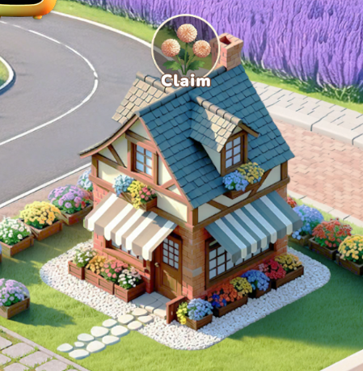
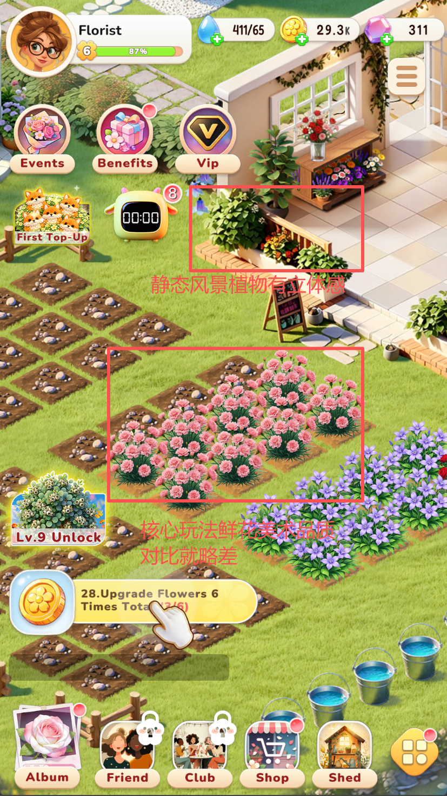
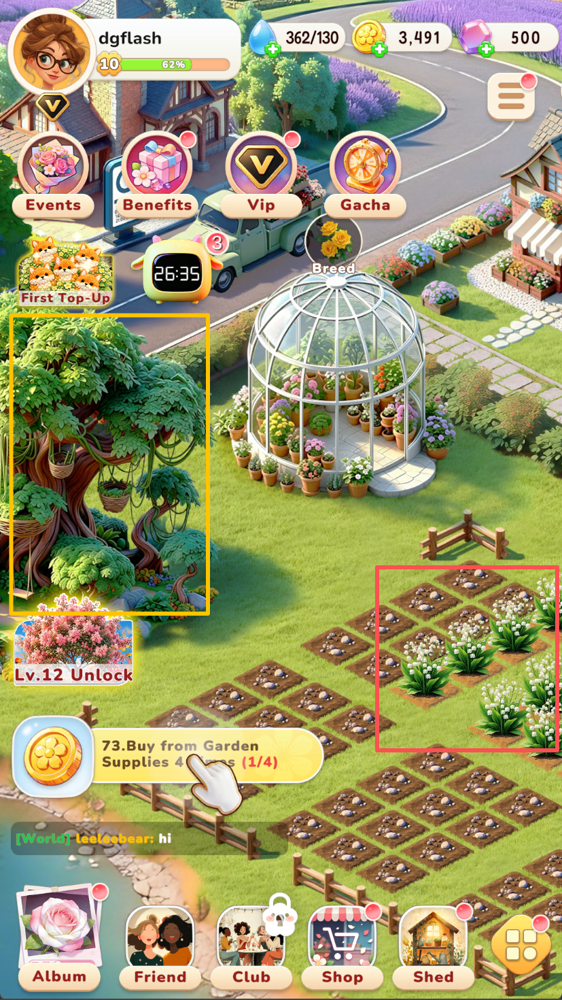
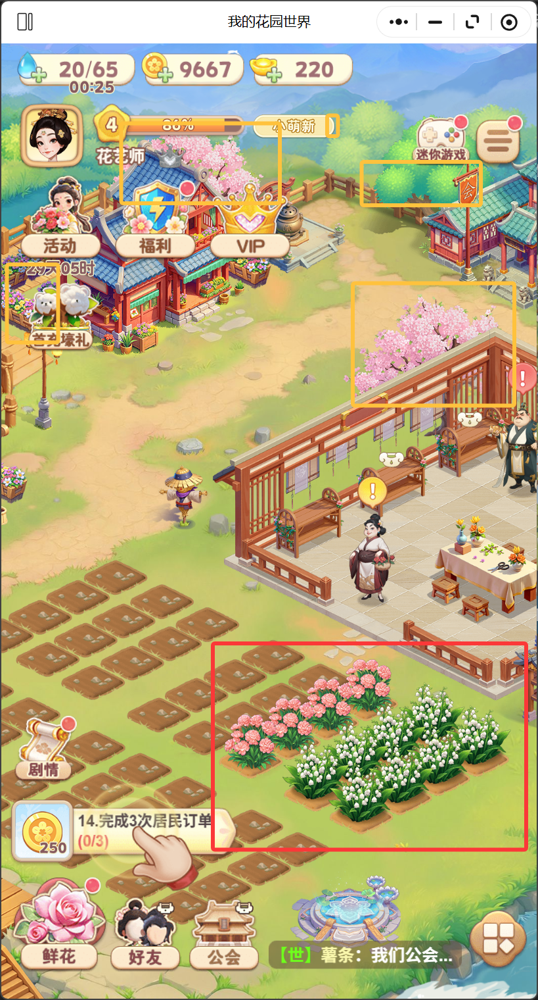

Booming Town 体验到10级后的玩家建议
前言：前置说明
前置说明：通过对比《我的花园世界》与《Booming Town》同期实际体验，节奏数值判断二者高度接近（可视为后者为前者的高仿版本）。不同海外用户群体对游戏体验的诉求存在差异，最终是否采纳以下建议需结合前期运营统计的数据综合判断。制定建议的主要目标为提升游戏体验。
一、策划建议
核心问题：玩家在 1-2 天的碎片化游戏时间内，因主线循环体验高度重复而陷入首次疲劳期，加之支线内容缺失、剧情引导薄弱，导致玩家尚未建立足够的情感投入与玩法理解便产生早期流失。
建议方案
- 低成本剧情补充：游戏中后期可参考《我的花园世界》的轻量级剧情表现手法（如对白气泡、立绘展示、静态场景切换），低成本植入剧情内容。现有开场剧情体验良好，可作为剧情表现的基准范式，并将其复用至中后期的体验重复阶段，让玩家逐步了解游戏世界观。
- 小游戏玩法填充：在主循环间隙接入轻量级小游戏（如消消乐、浇水挑战、限时采摘等）作为调剂，延长玩家单局在线时长。
- 资源奖励反馈：附加玩法通关后赠送肥料、钻石、种子等养成资源，使玩家从支线玩法中获得进度反馈，反哺主线养成。
- 双轨体验设计：构建"主循环（种花-浇水-收花）+ 副玩法（剧情/小游戏）"的双轨内容结构，降低单一核心玩法的枯燥感，延缓玩家在中期阶段的疲劳与流失。
二、程序建议
- 动画延迟：Booming Town 较《我的花园世界》存在约 200ms 的交互延迟，拖拽操作时鼠标划过地块缺乏即时反馈（体感参考下方视频），对核心循环的流畅度造成显著影响。
动画延迟对比演示
- 目前激励广告存在异常问题：无论是微信分发的 APK 安装包，还是 Google Play 已上线的正式版本，点击激励广告按钮后均无任何弹窗、提示反馈，广告完全无法正常拉起。麻烦技术侧排查定位故障根源。
若问题是新游戏上线初期平台广告限流导致，建议补充对应的正向交互反馈逻辑；也可做兜底方案，广告加载失败时直接发放对应奖励，避免玩家因广告异常无法领取资源，损害游玩体验。 - 渲染层级 Bug：人物动画与建筑动画层级错误，房子会盖住人物脑袋。复现方式：让人物从该建筑走出，即可观察到头部被遮挡的异常穿模。

渲染层级 Bug 示例：人物被建筑遮挡
三、美术建议
游戏进入时美术风格印象良好，前期的 CG 动画品质较高，第一印象非常好。但进入游戏主场景后，核心种花区域的画风与整体场景画风存在明显割裂——周边建筑、装饰植物等静态景物在色彩饱和度、细节刻画、立体感等维度上表现过强，反而压制了核心玩法的视觉呈现权重，导致玩家首屏视觉焦点偏离核心玩法区，可能进一步影响操作路径的优先级判断。
对比示例
| 对比项 | Booming Town（图1、图2，存在问题） | 我的花园世界（图3，参考标准） |
|---|---|---|
| 周边景物 | 静态风景植物在立体感、细节刻画上表现过强，视觉权重高于核心玩法区；图3中左侧大树的精细度、色彩饱和度均明显高于右侧核心种花区，呈现"配角抢戏"问题 | 周边建筑、栅栏、樱花树风格统一，整体作为背景层，视觉权重明显弱于核心区 |
| 核心玩法区 | 种花区域花株细节不足、动态效果弱，与周边静态景物对比显得单薄 | 核心种花区是画面视觉重心，花株层叠、立体感强，与周围建筑形成"主角 vs 配角"的清晰层级 |
| 视觉聚焦 | 第一眼容易被右上角的静态植物盆栽或左侧大树吸引，主体玩法反被边缘化 | 打开界面后第一眼即锁定中央核心玩法区，周边景物自然退入背景 |

图1：Booming Town 核心区与场景画风割裂示例

图2：Booming Town 周边大树压制核心区示例

图3：我的花园世界 核心区视觉层级参考
改进方向
- 视觉层级重塑：以核心种花区域为画面视觉主角，周边建筑、装饰植物等场景元素作为视觉次要层，通过色彩饱和度、对比度、光照亮度的差异化处理，引导玩家视线自然聚焦于核心玩法区。
- 画风统一性：核心种花区域与周边场景的画风需保持一致，建议主美对核心区的花株、土地、道具等素材进行专项美术检查与评审，参照周边场景已成熟的美术标准进行返工或重绘。
- 首屏视觉引导：在界面打开瞬间，通过景深、动效、镜头聚焦等手法强化核心区的视觉吸引力，确保玩家第一眼即关注到主体玩法（参考《我的花园世界》的视觉处理方式）。
- 美术规范沉淀：建立"核心区 > 周边场景"的美术优先级规范，避免后续内容迭代中再次出现主次倒置的问题。